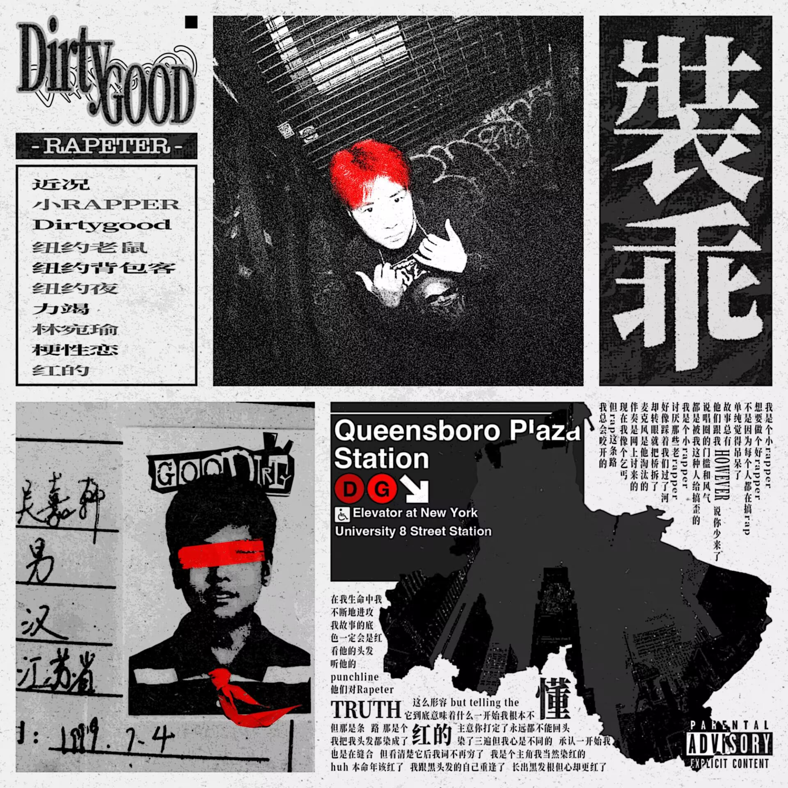

| 吴嘉轩（Rapeter） |
点击右方专辑照片欣赏歌曲
|
 |
|---|
Rapeter，本名吴嘉轩，1999年7月4日出生，中国内地说唱音乐人、词曲创作者，是中文New Boombap风格的新生代代表。他本科就读于上海大学金融系，硕士毕业于纽约大学整合营销专业，是典型的学院派说唱选手。早期他就凭借扎实的押韵功底和流畅的节奏在说唱赛事中崭露头角，拿下《新说唱2024》海外赛区总冠军、网易云音乐新血作品赛全国总冠军等荣誉，被更多说唱爱好者熟知。 他的创作以New Boombap为核心，不盲目追求快嘴炫技，擅长用密集精巧的punchline搭配叙事性歌词，兼顾韵律质感与文字表达，歌词常常聚焦成长、自我思考与现实观察，兼具文学感与力量感。代表作有《洗牌》《林宛瑜》《纽约夜》《我准备好了》《Step 2》等，其中《洗牌》一经播出热度暴涨，收获大量听众喜爱。 他先后推出《DirtyGOOD 装乖》《IMGOOD别担心我》等多张专辑，持续开展全国个人巡演，多次登上说唱综艺舞台，收获了业内前辈和观众的认可。在创作之外，他始终保持独立的音乐态度，不断打磨作品，持续在Boombap赛道探索属于自己的表达。 |
| 返回首页 |